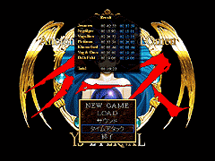

目次 > ゲームについて > 日本Falcom 攻略 > Ys > タイムアタック
らんの眼
Ys(イース) Ys Eternal(VE)/Ys Complete
| タイムアタックモードの出し方 |
はじめに、タイムアタックモードはComplete でしかプレーできないので、注意してください。
出し方としては簡単で、とにかく、どの難易度でもいいので、一度クリアすればタイトル画面から「タイムアタック」が選択できるようになり、タイムアタックモードをプレーできるようになります。
 |
| |
| ボス |
HP(レベル) |
武器(攻撃力) |
盾(防御力) |
鎧 |
| ジェノクレス |
80 (LV.4) |
LONG SWORD(85) |
SMALL SHIELD(60) |
CHAIN MAIL |
| ニグティルガー |
150(LV.7) |
LONG SWORD(155) |
SILVER SHIELD(160) |
PLATE MAIL |
| ヴァジュリオン |
255(LV.10) |
SILVER SWORD(240) |
SILVER SHIELD(225) |
SILVER ARMER |
| ピクティモス |
255(LV.10) |
SILVER SWORD(240) |
SILVER SHIELD(215) |
REFLEX |
| コンスクラード |
255(LV.10) |
SILVER SWORD(240) |
SILVER SHIELD(215) |
REFLEX |
| ヨグレクス&オムルガン |
255(LV.10) |
FLAME SWORD(255) |
BATTLE SHIELD(255) |
BATTLE ARMER |
| ダルク＝ファクト |
255(LV.10) |
SILVER SWORD(240) |
SILVER SHIELD(225) |
SILVER ARMER |
| ボス |
HP(レベル) |
武器(攻撃力) |
盾(防御力) |
鎧 |
らんの眼